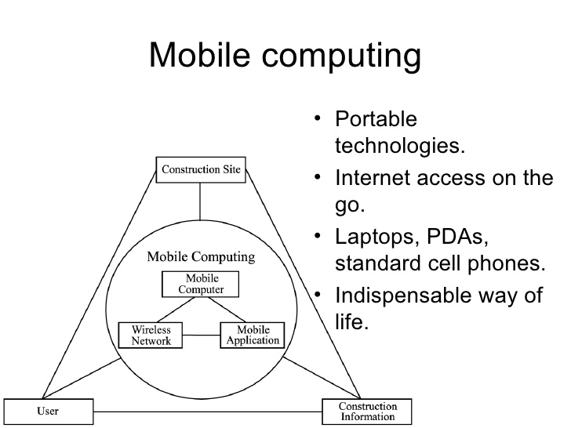

Introduction to Mobile Computing
Mobile Computing:A technology that is capable of providing an environment which enables users to transmit data from one device to other device without the use of any physical link/cables is known as Mobile Computing.
- It means, data transmission is done wireless-ly with the help of wireless devices such as mobiles, laptops etc.
- Whenever any device is connected to a network without being connected physically over a link or cable, data transmission such as messages, voice recording, videos etc. can be done be done by using the concept of mobile computing.
- Mobile Computing technology helps users to access and transmit data from any remote locations without being present there physically.
- Thus, having such a big coverage diameter, it is one of the fastest and most reliable sectors of computing technology field.

Constraints of Mobility
Mobile computing is characterized by four constraints:
- Mobile elements are resource-poor relative to static elements.
For a given cost and level of technology considerations of weight, power, size and ergonomics will exact a penalty in computational resources such as processor speed, memory size, and disk capacity. While mobile elements will improve in absolute ability, they will always be resource-poor relative to static elements.
- Mobility is inherently hazardous.A Wall Street stockbroker is more likely to be mugged on the streets of Manhattan and have his laptop stolen than to have his workstation in a locked office be physically subverted. In addition to security concerns, portable computers are more vulnerable to loss or damage.
- Mobile connectivity is highly variable in performance and reliability.
Some buildings may offer reliable, high-bandwidth wirelessconnectivity while others may only offer low-bandwidth connectivity. Outdoors, a mobile client may have to rely on a low-bandwidth wireless network with gaps in coverage.
- Forwarding Pointers method places a copy of the new address at the old location. Each message is forwarded along the chain of pointers leading to the mobile computer. This requires an active entity at the old address to receive and forward messages.
Challenges of Mobile Computing
The need for mobile computing leads to design challenges in several areas.
Disconnection: Today’s computer systems often depend heavily on a network and may cease to function during network failures. For example, distributed file systems may lock up waiting for other servers, and applications process may fail altogether if the network stays down too long. Network failure is a greater concern in mobile computing than in traditional computing because wireless communication is so susceptible to disconnection. Designers must decide whether to spend available resources on the network, trying to prevent disconnections, or to spend them trying to enable systems to cope with disconnections more gracefully and work around them where possible.
Low Bandwidth: Mobile computing designs also contend with much greater variation in network bandwidth than do traditional designs. Bandwidth can shift one to four orders of magnitude, depending on whether the system is plugged in or using wireless access. An application can approach this variability in one of three ways: it can assume high-bandwidth connections and operate only while plugged in, it can assume low bandwidth connections and not take advantage of higher bandwidth when it is available, or it can adapt to currently available resources, providing the user with a variable level of detail or quality.
High bandwidth variability: Precisely because connection to a wireless link is so easy, the security of wireless communication can be compromised much more easily than that of wired communication, especially if transmission extends over a large area. This increases pressure on mobile computing software designers to include security measures. Security is further complicated if users are allowed to cross security domains. For example, a hospital may allow patients with mobile computers to use nearby printers but prohibit access to distant printers and resources designated for hospital personnel only.
Heterogeneous network: In contrast to most stationary computers, which stay connected to a single network, mobile computers encounter more heterogeneous network connections in several ways. First, as they leave the range of one network transceiver and switch to another, they may also need to change transmission speeds and protocols. Second, in some situations a mobile computer may have access to several network connections at once, for example, where adjacent cells overlap or where it can be plugged in for concurrent wired access.
Limitations of Mobile Computing:
- Insufficient Bandwidth: Mobile Internet access is generally slower than direct cable connections, using technologies such as GPRS and EDGE, and more recently 3G networks. These networks are usually available within range of commercial cell phone towers. Higher speed wireless LANs are inexpensive but have very limited range.
- Security Standards: When working mobile, one is dependent on public networks, requiring careful use of Virtual Private Network (VPN). Security is a major concern while concerning the mobile computing standards on the fleet. One can easily attack the VPN through a huge number of networks interconnected through the line.
- Power consumption: When a power outlet or portable generator is not available, mobile computers must rely entirely on battery power. Combined with the compact size of many mobile devices, this often means unusually expensive batteries must be used to obtain the necessary battery life.
- Transmission interferences: Weather, terrain, and the range from the nearest signal point can all interfere with signal reception. Reception in tunnels, some buildings, and rural areas is often poor.
- Potential health hazards: People who use mobile devices while driving are often distracted from driving are thus assumed more likely to be involved in traffic accidents. Cell phones may interfere with sensitive medical devices. There are allegations that cell phone signals may cause health problems.
Applications of Mobile Computing
- For Estate Agents:Estate agents can work either at home or out in the field. With mobile computers they can be more productive. They can obtain current real estate information by accessing multiple listing services, which they can do from home, office or car when out with clients. They can provide clients with immediate feedback regarding specific homes or neighborhoods, and with faster loan approvals, since applications can be submitted on the spot. Therefore, mobile computers allow them to devote more time to clients.
- Emergency Services:Ability to receive information on the move is vital where the emergency services are involved. Information regarding the address, type and other details of an incident can be dispatched quickly, via a Cellular Digital Packet Data (CDPD) system using mobile computers, to one or several appropriate mobile units, which are in the vicinity of the incident.
- In courts:Defense counsels can take mobile computers in court. When the opposing counsel references a case which they are not familiar, they can use the computer to get direct, real-time access to on-line legal database services, where they can gather information on the case and related precedents. Therefore mobile computers allow immediate access to a wealth of information, making people better informed and prepared.
- In companies:Managers can use mobile computers in, say, critical presentations to major customers. They can access the latest market share information. At a small recess, they can revise the presentation to take advantage of this information. They can communicate with the office about possible new offers and call meetings for discussing responds to the new proposals. Therefore, mobile computers can leverage competitive advantages.
- Credit Card Verification:At Point of Sale (POS) terminals in shops and supermarkets, when customers use credit cards for transactions, the intercommunication is required between the bank central computer and the POS terminal, in order to effect verification of the card usage, can take place quickly and securely over cellular channels using a mobile computer unit. This can speed up the transaction process and relieve congestion at the POS terminals.